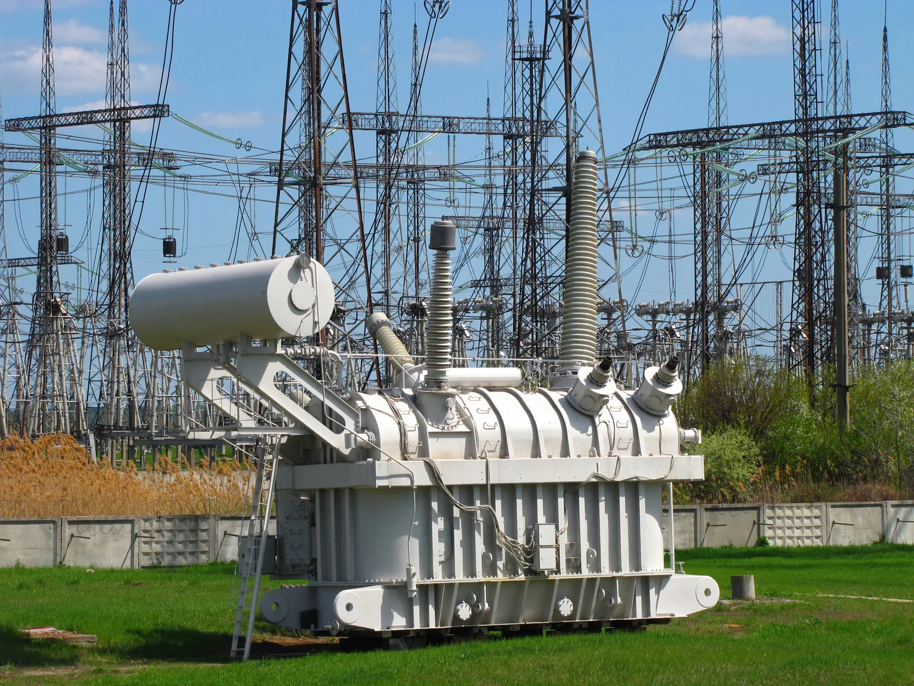

The transformer and the transmission of electrical energy
Why is electricity carried from a power plant to a city at a voltage of $400\,\text{kV}$, when the voltage at a socket at home is only $230\,\text{V}$?
Prior knowledge
- A changing magnetic flux induces a voltage in a coilchapter Electromagnetic induction
- A generator produces an alternating voltage, and the effective value of the mains voltage is $230\,\text{V}$chapter The generator and alternating current
Core path: follow the steps in order. Besides calculations, the core path includes investigations, explanations and graphs. Tasks marked Optional give extra practice. Optional tasks: 4.
Think about it
The generator of a power plant produces a voltage of about $20\,\text{kV}$, and the voltage at the sockets in homes is $230\,\text{V}$. In between, the electricity travels hundreds of kilometres along the lines of the transmission grid, where the voltage is as high as $400\,\text{kV}$. So the voltage is first raised enormously and then lowered step by step. This requires expensive transformers and tall pylons.
Why is electricity not transmitted directly at the voltage of the generator, and how can a voltage be changed at all?
Optional Review: induction
Predict
Make your predictions before investigating 2 questions
Prediction 1: the transformer and a battery
Prediction 2: double the voltage
Investigate
Simulation
How to use
Adjust the transmission voltage $U$, the transmitted power $P$ and the length of the line $l$. On the left of the picture is the power plant with its step-up transformer, in the middle the power line, and on the right the step-down transformer and the city. The line turns the redder, the larger the share of the power that becomes internal energy in it. The bars under the picture show the power that arrives (green) and the power loss (orange) on the same scale. From the Readings row you see the current of the line, its resistance and the turns ratio of the step-up transformer.
Assumptions of the model
The model treats the transmission in a simplified way as transmission along two conductors: the power $P$ is sent by the power plant at the voltage $U$, and the total resistance of the conductors is $R = 0.040\,\tfrac{\Omega}{\text{km}} \cdot l$. The real transmission grid is three-phase, but the dependence of the loss on the current is the same. The voltage of the generator is always $20\,\text{kV}$, and the transformers are assumed to be ideal. If the power loss would be greater than the power sent, the transmission is not possible, and the model says so. The readings are values calculated by the model, not measurements.
How the calculation works
The current of the line is obtained from the power and the transmission voltage, $I = P : U$, and the power that becomes internal energy in the line is
$$P_\text{h} = R I^2$$
The power that arrives is $P_\text{arriving} = P - P_\text{h}$, and the share of the loss is $P_\text{h} : P$. The turns ratio of the step-up transformer is $N_2 : N_1 = U : 20\,\text{kV}$.
A power plant sends power to a city along a power line. Choose the transmission voltage, the power and the length of the line, and watch how large a share of the power becomes internal energy in the line.
Experiment 1: only the transmission voltage changes
Test prediction 2. The power is $200\,\text{MW}$ and the length of the line $150\,\text{km}$; change only the transmission voltage. Record at least the voltages $100\,\text{kV}$, $200\,\text{kV}$ and $400\,\text{kV}$, and if you wish also $50\,\text{kV}$. Compare how the current and the power loss change when the voltage doubles.
Initial state: transmission voltage = $100\,\text{kV}$, power = $200\,\text{MW}$, length of line = $150\,\text{km}$. Kept constant: power, length of line. Varied: transmission voltage.
| transmission voltage | $I$ $(\text{A})$ | $P_h$ $(\text{MW})$ | share $(\%)$ |
|---|
More to investigate 1 task
Conclusion: loss and voltage
On the basis of your table, write: how do the current and the power loss of the line change when the transmission voltage doubles? What is the dependence between the power loss and the voltage? What does this mean for a power plant that wants to transmit electricity far?
Model answer
When the voltage doubles from $100\,\text{kV}$ to $200\,\text{kV}$, the current halves from $2000\,\text{A}$ to $1000\,\text{A}$ and the power loss falls from $24\,\text{MW}$ to $6.0\,\text{MW}$, to a quarter. Likewise at $400\,\text{kV}$ the current is $500\,\text{A}$ and the loss $1.5\,\text{MW}$, only $0.75\,\%$ of the power. The current is inversely proportional to the voltage, $I = P : U$, and the loss is proportional to the square of the current, $P_\text{h} = R I^2$, so the loss is inversely proportional to the square of the voltage. That is why it pays to raise the voltage of the generator with a transformer to high voltage before the transmission and to lower it at the destination. The values are calculated by the model.
Assess your own answer
Tick the points your own answer already contains.
Theory
Key idea
A transformer changes an alternating voltage
A transformer has a closed iron core and two coils wound around it. An alternating voltage is connected to the primary coil, and the voltage for the device is taken from the secondary coil. The coils do not touch each other, and no current flows between them along a conductor. The alternating current of the primary coil produces in the iron core a magnetic field whose magnitude and direction vary in step with the current. The iron core guides almost the whole magnetic flux around the core and so also through the secondary coil. In the chapter Electromagnetic induction we saw that a changing magnetic flux induces a voltage in a coil. Therefore an alternating voltage is produced in the secondary coil, with the same frequency as the primary voltage.
The number of turns decides the voltage
The same changing magnetic flux passes through every turn of both coils, so an equal voltage is induced in every turn. The voltage of a coil is the sum of the voltages of its turns, so it is proportional to the number of turns. In an ideal transformer the ratio of the primary and secondary voltages is therefore the same as the ratio of the numbers of turns of the coils, the turns ratio. When the secondary coil has more turns than the primary coil, the transformer raises the voltage (a step-up transformer). When the secondary coil has fewer turns, the transformer lowers the voltage (a step-down transformer).
A transformer needs a changing magnetic flux
A voltage is induced in the secondary coil only when the magnetic flux through it changes. If the primary coil is connected to a battery, a steady direct current flows in the coil, and the magnetic field of the iron core is constant. A constant magnetic flux does not induce a voltage, so the voltage of the secondary coil is zero. A voltage pulse is produced only at the moment when the current is switched on or off, because then the flux changes. This is why the power grid uses alternating current: in the chapter The generator and alternating current a generator produces an alternating voltage, and with transformers its size can be changed to suit each purpose.
Power is conserved, current changes
An ideal transformer does not consume energy, so the power coming into the primary coil is equal to the power leaving the secondary coil. When the load is resistive, power is the product of voltage and current, so when a transformer raises the voltage tenfold, the current falls to a tenth. A transformer therefore does not add energy or power: it exchanges a large current for a high voltage or the other way round. In a real transformer some of the energy becomes internal energy in the resistance of the coils and in the eddy currents of the iron core. That is why the core is built of thin plates insulated from each other (chapter Lenz's law and eddy currents). The efficiency of large power-plant transformers is over $99\,\%$.
Transmission loss and high voltage
A power line has resistance, and the current flowing in the line heats it. The power that becomes internal energy is proportional to the square of the current, so it pays to keep the current small. The same power can be transmitted at a high voltage and a small current. When the voltage is raised tenfold, the current falls to a tenth and the power loss to a hundredth. That is why the voltage of the generator of a power plant is raised with a transformer to high voltage. The voltages of the Finnish transmission grid, maintained by Fingrid, are $400\,\text{kV}$, $220\,\text{kV}$ and $110\,\text{kV}$. The losses of the transmission grid correspond to about $2\,\%$ of the electricity used in Finland (Fingrid, Yhteisillä linjoilla 2026, data for 2025).

The voltage is lowered step by step
At substations, transformers lower the voltage to $110\,\text{kV}$ in the regional network and $20\,\text{kV}$ in the distribution network, and the distribution transformer of a residential area lowers, for example, the $20\,\text{kV}$ voltage to the voltage of the low-voltage network. In the low-voltage network there is about $400\,\text{V}$ between the phase conductors and about $230\,\text{V}$ between a phase conductor and the neutral conductor, which is the voltage of a socket at home.
High voltage is not brought into homes, because insulating it requires long insulators and large distances, and touching it would be fatal (chapter Electrical safety at home and at work). The charger of a phone lowers the voltage still further to about $5\,\text{V}$. A modern charger first changes the mains voltage to a very high frequency, so that the transformer can be small, and rectifies it at the end. The coils of the charger's transformer do not touch each other, so the phone is not conductively connected to the power grid.
Transformer and transmission loss
The voltages and currents of an ideal transformer depend on the numbers of turns of the coils:
$$\frac{U_1}{U_2} = \frac{N_1}{N_2} = \frac{I_2}{I_1}$$
where $U_1$ is the primary voltage (V), $U_2$ the secondary voltage (V), $N_1$ and $N_2$ the numbers of turns of the primary and secondary coils and $I_1$ and $I_2$ the primary and secondary currents (A). The ratio $N_1 : N_2$ is the turns ratio. The latter equality follows from the conservation of power: $U_1 I_1 = U_2 I_2$. The voltages and currents are effective (rms) values (chapter The generator and alternating current). When the voltage increases, the current decreases in the same proportion.
Power loss of a transmission line
The principle of power transmission is illustrated with a simplified two-wire circuit: the current flows to the destination along one conductor and returns along the other. A power plant sends a power $P$ at a voltage $U$. The current of the line and the power that becomes internal energy in the line are
$$\begin{aligned} P &= U I \\[6pt] P_\text{h} &= R I^2 = \frac{R P^2}{U^2} \end{aligned}$$
where $P$ is the transmitted power (W), $U$ the transmission voltage (V), $I$ the current of the line (A), $R$ the combined resistance of both conductors (Ω) and $P_\text{h}$ the power loss (W). When the same power is transmitted at double the voltage, the current halves and the power loss falls to a quarter. The transmission voltage $U$ is not the voltage across the resistance of the line: the voltage drop between the ends of the line is only $R I$, so the power loss must not be calculated with the expression $U^2 : R$.
The real transmission grid is three-phase
The real Finnish transmission grid is three-phase: a line has three phase conductors, and for example $400\,\text{kV}$ is the voltage between the phase conductors, the line voltage. The active power of an evenly loaded three-phase grid is
$$P = \sqrt{3}\,U I \cos\varphi$$
where $P$ is the transmitted active power (W), $U$ the line voltage (V), $I$ the current of a phase conductor (A) and $\cos\varphi$ the power factor. The power factor is one when the current and the voltage are in phase. At the same voltage, current and power factor, a three-phase line therefore transmits about $1.73$ times the power of the two-wire model. The principle is the same, however: a high transmission voltage reduces the current and the losses. The calculation tasks of this chapter deliberately use the simplified two-wire model $P = UI$ unless the task says otherwise.
Common misconception
Many people calculate the power loss of a power line with the expression $P = U^2 : R$ and conclude that a higher voltage increases the losses. In that expression, however, $U$ is the voltage across the resistor. The transmission voltage is the voltage between the conductors, or between the conductors and the ground, and across the resistance of the line there is only a small voltage drop $R I$. The correct way is to calculate first the current $I = P : U$ and then the power loss $P_\text{h} = R I^2$: a higher voltage reduces the current and the losses. Another mistake is to think that a transformer that raises the voltage increases the power. In an ideal transformer power is conserved, so when the voltage increases, the current decreases. A third mistake is to assume that a transformer also works with a battery. It needs a changing magnetic flux, that is, alternating current.
Summary
- In a transformer the alternating current of the primary coil produces a changing magnetic flux in the iron core, and the flux induces an alternating voltage in the secondary coil. With direct current the flux does not change, and the transformer does not work.
- In an ideal transformer $U_1 : U_2 = N_1 : N_2 = I_2 : I_1$. Power is conserved, so when the voltage increases, the current decreases.
- The power loss of a transmission line is $P_\text{h} = R I^2$, where $I = P : U$. Double the transmission voltage reduces the loss to a quarter.
- Electricity is transmitted over long distances at high voltage: the voltages of the Finnish transmission grid are $400\,\text{kV}$, $220\,\text{kV}$ and $110\,\text{kV}$, and transformers lower the voltage step by step to the $400\,\text{V}$ and $230\,\text{V}$ of the low-voltage network.
- Calculations use the simplified two-wire model $P = UI$. The real transmission grid is three-phase: $400\,\text{kV}$ is the line voltage, and the active power is $P = \sqrt{3}\,U I \cos\varphi$.
Optional Return to your predictions
Compare your predictions with the theory and with the values of the model in the experiment. Then return to the opening question: why is electricity not transmitted at the generator voltage of $20\,\text{kV}$, and why does changing the voltage require alternating current?
Would you change your prediction?
Examples
Once you have studied the chapter's theory, move on to the guided examples. In the first you follow a worked solution step by step; in the next ones you make the choices yourself, and the hints help if you get stuck.
Example 1: A substation transformer
The transformer of a substation lowers the voltage of the regional network, $110\,\text{kV}$, to the distribution network voltage of $20\,\text{kV}$. The secondary coil has $360$ turns, and the current going into the distribution network is $450\,\text{A}$. How many turns does the primary coil have, and how large a current flows in the primary coil? Assume the transformer to be ideal.
Step 1/7
Given and find. Primary voltage $U_1 = 110\,\text{kV}$, secondary voltage $U_2 = 20\,\text{kV}$, number of turns of the secondary coil $N_2 = 360$ and secondary current $I_2 = 450\,\text{A}$. We are asked for the number of turns $N_1$ of the primary coil and the primary current $I_1$.
Step 2/7
Principle. In an ideal transformer the same changing magnetic flux passes through both coils, so the voltages are in the same ratio as the numbers of turns. The transformer does not consume energy, so power is conserved, $U_1 I_1 = U_2 I_2$, and the currents are in inverse proportion to the voltages.
Step 3/7
Formula solved.
$$\begin{aligned} \frac{U_1}{U_2} &= \frac{N_1}{N_2} \;\Rightarrow\; N_1 = \frac{N_2 U_1}{U_2} \\[6pt] \frac{U_1}{U_2} &= \frac{I_2}{I_1} \;\Rightarrow\; I_1 = \frac{I_2 U_2}{U_1} \end{aligned}$$
Step 4/7
Unit conversions. Not needed: in both formulas the voltages form a quotient, so the kilovolts cancel. Both voltages are in the same unit, $\text{kV}$.
Step 5/7
Substitution. $$\begin{aligned} &N_1 = \frac{N_2 U_1}{U_2} \\ &= \frac{360 \cdot 110\,\text{kV}}{20\,\text{kV}} \\ &= 1980 \\[6pt] &I_1 = \frac{I_2 U_2}{U_1} \\ &= \frac{450\,\text{A} \cdot 20\,\text{kV}}{110\,\text{kV}} \\ &= 81.82\,\text{A} \end{aligned}$$
Step 6/7
Result. The primary coil has $1980$ turns, and the primary current is $I_1 \approx 82\,\text{A}$. The current is given to two significant figures, like the voltage $20\,\text{kV}$.
Step 7/7
Reasonableness. The transformer lowers the voltage, so the primary coil must have more turns and a smaller current than the secondary coil, as in the result. Power is conserved: $110\,\text{kV} \cdot 81.82\,\text{A} = 9.0\,\text{MW}$ and $20\,\text{kV} \cdot 450\,\text{A} = 9.0\,\text{MW}$.
Optional Example 2: Find the error
Example 3: Apply to a new situation: the connection line of a wind farm
A wind farm feeds a power of $33\,\text{MW}$ to a substation along a $110\,\text{kV}$ power line. The total resistance of the conductors is $8.0\,\Omega$. The transmission is described with the simplified two-wire model.
How large a power becomes internal energy in the line? Answer in kilowatts.
Hint 1: a guiding question
The line is heated by the current. How is the current obtained when the power and the transmission voltage are known?
Hint 2: what is the connection
The current is $I = P : U$, and the power loss $P_\text{h} = R I^2$.
Hint 3: an intermediate step
so $P_\text{h} = 8.0\,\Omega \cdot (300\,\text{A})^2$.
Show the solution
Given
power $P = 33\,\text{MW}$, transmission voltage $U = 110\,\text{kV}$, total resistance of the conductors $R = 8.0\,\Omega$
Find
the power $P_\text{h}$ that becomes internal energy in the line, in kilowatts
Principle
In the resistance of the line the current changes electrical energy into internal energy at the rate $P_\text{h} = R I^2$. The current is obtained from the transmitted power and the transmission voltage, because $P = U I$. The transmission voltage is not across the resistance of the line, so the expression $U^2 : R$ cannot be used.
Formula
$P = U I$, so $I = \dfrac{P}{U}$, and $P_\text{h} = R I^2$
Conversions
Finally $1\,\text{kW} = 1000\,\text{W}$.
Substitution
Answer
$720\,\text{kW}$
Or $7.2 \cdot 10^{2}\,\text{kW}$, two significant figures like the power $33\,\text{MW}$ and the resistance $8.0\,\Omega$.
Reasonableness
The loss is $720\,\text{kW} : 33\,000\,\text{kW} \approx 2.2\,\%$ of the transmitted power, the same order of magnitude as the share of loss in the transmission grid reported by Fingrid, about $2\,\%$. The loss is a small part of the power, as it should be in a working grid.
Review the chapter's concepts
Cards you mark Review later collect in your review deck.
- Transformer
- A device that changes the size of an alternating voltage in the ratio of the numbers of turns in its coils.
Exercises
Level 1 · basic practice 8 exercises
One formula or one step of reasoning. Core exercises first, the rest is extra practice.
- Exercise 8-1Core
The primary coil of a doorbell transformer has $1200$ turns and the secondary coil $60$ turns. The primary coil is connected to the mains voltage $230\,\text{V}$.
How large is the secondary voltage? Assume the transformer to be ideal.
Answer
$11.5\,\text{V}$
Show the solution
Given
number of turns of the primary coil $N_1 = 1200$, of the secondary coil $N_2 = 60$, primary voltage $U_1 = 230\,\text{V}$, ideal transformer
Find
the secondary voltage $U_2$ in volts
Principle
In the iron core of a transformer the same changing magnetic flux passes through every turn of both coils, so an equal voltage is induced in every turn. Therefore the voltages of an ideal transformer are in the same ratio as the numbers of turns.
Formula
$\dfrac{U_1}{U_2} = \dfrac{N_1}{N_2}$, so $U_2 = \dfrac{U_1 N_2}{N_1}$
Conversions
Not needed: the ratio of the numbers of turns has no unit, and the voltage comes out in volts.
Substitution
$U_2$$= \dfrac{230\,\text{V} \cdot 60}{1200}$$= 11.5\,\text{V}$Answer
$11.5\,\text{V}$
Three significant figures like the voltage $230\,\text{V}$; the numbers of turns are exact numbers.
Reasonableness
The secondary coil has $20$ times fewer turns, so the voltage must be $20$ times smaller: $230\,\text{V} : 20 = 11.5\,\text{V}$. A small voltage like this suits a doorbell and is safe to touch.
- Exercise 8-2
The ideal transformer of a garden light lowers the mains voltage $230\,\text{V}$ to a voltage of $8.0\,\text{V}$. The secondary coil has $40$ turns.
How many turns does the primary coil have?
Answer
$1150$
Show the solution
Given
primary voltage $U_1 = 230\,\text{V}$, secondary voltage $U_2 = 8.0\,\text{V}$, number of turns of the secondary coil $N_2 = 40$, ideal transformer
Find
the number of turns $N_1$ of the primary coil
Principle
In an ideal transformer the same changing magnetic flux passes through both coils, so the same voltage is induced in every turn and the voltages of the coils are in the same ratio as the numbers of turns.
Formula
$\dfrac{U_1}{U_2} = \dfrac{N_1}{N_2}$, so $N_1 = \dfrac{N_2 U_1}{U_2}$
Conversions
Not needed: in the ratio of the voltages the volts cancel.
Substitution
$N_1$$= \dfrac{40 \cdot 230\,\text{V}}{8.0\,\text{V}}$$= 1150$Answer
$1150$
Turns. The number of turns is a whole number, and the two significant figures of the voltage $8.0\,\text{V}$ are enough for this precision.
Reasonableness
The voltage falls by a factor of about $29$ ($230\,\text{V} : 8.0\,\text{V} \approx 29$), so the primary coil must have about $29$ times as many turns as the secondary coil: $29 \cdot 40 \approx 1150$.
- Exercise 8-3
The local substation of a residential area lowers the voltage of the distribution network, $20\,\text{kV}$, to $400\,\text{V}$. The current going into the low-voltage network is $250\,\text{A}$.
How large a current flows in the primary coil of the transformer, when the transformer is assumed to be ideal?
Answer
$5.0\,\text{A}$
Show the solution
Given
primary voltage $U_1 = 20\,\text{kV}$, secondary voltage $U_2 = 400\,\text{V}$, secondary current $I_2 = 250\,\text{A}$, ideal transformer
Find
the primary current $I_1$ in amperes
Principle
An ideal transformer does not consume energy, so power is conserved, $U_1 I_1 = U_2 I_2$. Therefore the currents are in inverse proportion to the voltages.
Formula
$\dfrac{U_1}{U_2} = \dfrac{I_2}{I_1}$, so $I_1 = \dfrac{I_2 U_2}{U_1}$
Conversions
$U_1$$= 20\,\text{kV}$$= 20 \cdot 1000\,\text{V}$$= 20\,000\,\text{V}$so that the voltages are in the same unit.
Substitution
$I_1$$= \dfrac{250\,\text{A} \cdot 400\,\text{V}}{20\,000\,\text{V}}$$= 5.0\,\text{A}$Answer
$5.0\,\text{A}$
Two significant figures like the voltage $20\,\text{kV}$.
Reasonableness
Power is conserved: $20\,000\,\text{V} \cdot 5.0\,\text{A} = 100\,\text{kW}$ and $400\,\text{V} \cdot 250\,\text{A} = 100\,\text{kW}$. The primary current of a step-down transformer is smaller than the secondary current, as it should be. The real transformer of a local substation is three-phase, and $20\,\text{kV}$ and $400\,\text{V}$ are line voltages; the ratio of the currents is still the same $400\,\text{V} : 20\,000\,\text{V}$, because power is conserved on both sides.
- Exercise 8-4
The total resistance of the conductors of a distribution line is $2.5\,\Omega$, and a current of $120\,\text{A}$ flows in the line.
How large a power becomes internal energy in the line? Give the answer in kilowatts.
Answer
$36\,\text{kW}$
Show the solution
Given
total resistance of the conductors $R = 2.5\,\Omega$, current $I = 120\,\text{A}$
Find
the power $P_\text{h}$ that becomes internal energy in the line, in kilowatts
Principle
In the resistance of the line the current changes electrical energy into internal energy. When the current and the resistance of the line are known, the power loss is obtained directly from the expression $P_\text{h} = R I^2$.
Formula
$P_\text{h} = R I^2$
Conversions
Finally $1\,\text{kW} = 1000\,\text{W}$.
Substitution
$P_\text{h}$$= 2.5\,\Omega \cdot (120\,\text{A})^2$$= 2.5\,\Omega \cdot 14\,400\,\text{A}^2$$= 36\,000\,\text{W}$$= 36\,\text{kW}$Answer
$36\,\text{kW}$
Two significant figures like the resistance $2.5\,\Omega$.
Reasonableness
Units:
$\Omega \cdot \text{A}^2$$= \tfrac{\text{V}}{\text{A}} \cdot \text{A}^2$$= \text{V} \cdot \text{A}$$= \text{W}$The loss corresponds to the power of about five electric stoves; in a distribution line such a power can be lost when the current is over a hundred amperes.
- Exercise 8-5
A current of $800\,\text{A}$ flows in each phase conductor of a three-phase $400\,\text{kV}$ line of the transmission grid. The voltage $400\,\text{kV}$ is the line voltage between the phase conductors, and the power factor is $1$.
How large a power does the line transmit? Give the answer in megawatts.
Answer
$554\,\text{MW}$
Show the solution
Given
line voltage of the three-phase line $U = 400\,\text{kV}$, current of a phase conductor $I = 800\,\text{A}$, power factor $\cos\varphi = 1$
Find
the transmitted power $P$ in megawatts
Principle
The line is three-phase, and $400\,\text{kV}$ is the line voltage between the phase conductors. The active power of an evenly loaded three-phase grid is $P = \sqrt{3}\,U I \cos\varphi$. The two-wire model $P = UI$ would give too small a result. Each of the three phase conductors carries power at the phase voltage $U : \sqrt{3}$, because the voltages of the phases are out of phase with each other, so the total power is $3 \cdot (U : \sqrt{3}) \cdot I = \sqrt{3}\,U I$.
Formula
$P = \sqrt{3}\,U I \cos\varphi$, and when $\cos\varphi = 1$, $P = \sqrt{3}\,U I$
Conversions
$U$$= 400\,\text{kV}$$= 400 \cdot 1000\,\text{V}$$= 400\,000\,\text{V}$Finally $1\,\text{MW} = 1\,000\,000\,\text{W}$.
Substitution
$P$$= \sqrt{3} \cdot 400\,000\,\text{V} \cdot 800\,\text{A}$$\approx 554\,260\,000\,\text{W}$$= 554.26\,\text{MW}$Answer
$554\,\text{MW}$
Three significant figures like the given values.
Reasonableness
The result is $\sqrt{3} \approx 1.73$ times the result of the two-wire model, $400\,\text{kV} \cdot 800\,\text{A} = 320\,\text{MW}$. A power of hundreds of megawatts is of the order of magnitude of the power of a large power plant, and a $400\,\text{kV}$ line of the transmission grid transmits just such powers.
- Exercise 8-6Core
An ideal transformer is connected to a battery that gives a direct voltage. When the current in the primary coil has settled to a constant value, the voltage of the secondary coil is measured to be zero.
What is the reason?
Answer
The magnetic flux produced by the direct current does not change, so no voltage is induced in the secondary coil.
Show the solution
Find
why a transformer gives no voltage in the secondary coil when the primary coil is connected to a direct voltage.
Principle
A voltage is induced in the secondary coil only if the magnetic flux through the coil changes (the law of induction). Direct current is constant, so the magnetic flux it produces in the iron core is constant, even though the current flows and the field exists.
Model answer
The magnetic flux produced by the direct current does not change, so no voltage is induced in the secondary coil. The current flows in the primary coil and the iron core is magnetized, but only a changing flux induces a voltage. Alternating current changes the flux continuously, which is why a transformer works with alternating voltage. A transformer can both raise and lower a voltage, and this depends on the numbers of turns, not on the type of current.
- Exercise 8-7Core
A power plant transmits power along a line, and a power of $840\,\text{kW}$ becomes internal energy in the line. The transmission voltage is doubled, and the transmitted power and the resistance of the line stay the same.
How large is the power loss now? Give the answer in kilowatts.
Answer
$210\,\text{kW}$
Show the solution
Given
the power loss at first $P_\text{h,1} = 840\,\text{kW}$, the transmission voltage is doubled, $U_2 = 2U_1$, the power $P$ and the resistance $R$ stay the same
Find
the new power loss $P_\text{h,2}$ in kilowatts
Principle
The current of the line is $I = P : U$, and the power loss is $P_\text{h} = R I^2 = R P^2 : U^2$. When $P$ and $R$ stay the same, the power loss is inversely proportional to the square of the voltage. Doubling the voltage halves the current, and the loss depends on the square of the current.
Formula
$P_\text{h} = \dfrac{R P^2}{U^2}$, so
$\dfrac{P_\text{h,2}}{P_\text{h,1}}$$= \dfrac{U_1^2}{U_2^2}$$P_\text{h,2}$$= P_\text{h,1} \cdot \dfrac{U_1^2}{U_2^2}$Conversions
Not needed: the power loss is in kilowatts, and the ratio of the voltages has no unit.
Substitution
$P_\text{h,2}$$= 840\,\text{kW} \cdot \dfrac{U_1^2}{(2U_1)^2}$$= 840\,\text{kW} \cdot \dfrac{1}{4}$$= 210\,\text{kW}$Answer
$210\,\text{kW}$
Two significant figures like the power loss $840\,\text{kW}$.
Reasonableness
The current is halved, so the square of the current is a quarter: $840\,\text{kW} : 4 = 210\,\text{kW}$. The loss decreases, but not to a half, because it depends on the square of the current.
- Exercise 8-8
The primary coil of a transformer takes a power of $80\,\text{W}$ from the mains, and the secondary coil gives the load a power of $72\,\text{W}$. The efficiency is $\eta = P_2 : P_1$.
What is the efficiency of the transformer as a percentage?
Answer
$90\,\%$
Show the solution
Given
primary power $P_1 = 80\,\text{W}$, secondary power $P_2 = 72\,\text{W}$
Find
the efficiency $\eta$ as a percentage
Principle
The efficiency is the share of the power received by the load in the power taken from the mains. In a real transformer part of the primary power becomes internal energy in the iron core and the coils, so $\eta < 1$.
Formula
$\eta = \dfrac{P_2}{P_1}$
Conversions
Not needed: the powers are in the same unit, so the ratio calculated in watts has no unit. Finally $1 = 100\,\%$.
Substitution
$\eta$$= \dfrac{72\,\text{W}}{80\,\text{W}}$$= 0.90$$= 90\,\%$Answer
$90\,\%$
Two significant figures like the powers $80\,\text{W}$ and $72\,\text{W}$.
Reasonableness
The power loss is $80\,\text{W} - 72\,\text{W} = 8\,\text{W}$, and $8\,\text{W} : 80\,\text{W} = 10\,\%$, so $100\,\% - 10\,\% = 90\,\%$. The efficiency of small transformers is usually in this range.
Level 2 · applied practice 8 exercises
Two steps, working with measured data, a unit conversion or rearranging a formula. Core exercises first, the rest is extra practice.
- Exercise 8-9Core
A hydroelectric power plant transmits a power of $50\,\text{MW}$ at a voltage of $110\,\text{kV}$ to a substation. The total resistance of the conductors is $4.0\,\Omega$. The transmission is described with the simplified two-wire model.
How large a power becomes internal energy in the line? Give the answer in kilowatts.
Answer
$8.3 \cdot 10^{2}\,\text{kW}$
Show the solution
Given
power $P = 50\,\text{MW}$, transmission voltage $U = 110\,\text{kV}$, resistance of the conductors $R = 4.0\,\Omega$
Find
the power $P_\text{h}$ that becomes internal energy in the line, in kilowatts
Principle
The task uses the simplified two-wire model. The line is heated by its current, and the power loss is $P_\text{h} = R I^2$. The current is obtained from the power and the transmission voltage, because $P = U I$. The transmission voltage is not across the resistance of the line, so the loss is not calculated with the expression $U^2 : R$.
Formula
$P = U I$, so $I = \dfrac{P}{U}$, and $P_\text{h} = R I^2$
Conversions
$P$$= 50\,\text{MW}$$= 50 \cdot 10^{6}\,\text{W}$$U$$= 110\,\text{kV}$$= 110 \cdot 10^{3}\,\text{V}$Finally $1\,\text{kW} = 1000\,\text{W}$.
Substitution
$I$$= \dfrac{50 \cdot 10^{6}\,\text{W}}{110 \cdot 10^{3}\,\text{V}}$$= 454.5\,\text{A}$$P_\text{h}$$= 4.0\,\Omega \cdot (454.5\,\text{A})^2$$= 826\,400\,\text{W}$$= 826.4\,\text{kW}$Answer
$8.3 \cdot 10^{2}\,\text{kW}$
Or about $830\,\text{kW}$, two significant figures like the power $50\,\text{MW}$ and the resistance $4.0\,\Omega$.
Reasonableness
The loss is $0.83\,\text{MW} : 50\,\text{MW} \approx 1.7\,\%$ of the transmitted power, of the same order of magnitude as the losses of the transmission grid, about $2\,\%$. So the loss is small but not negligible.
- Exercise 8-10
A phone charges at a voltage of $5.0\,\text{V}$ and a current of $2.0\,\text{A}$. Assume that the charger has an ideal transformer that lowers the mains voltage $230\,\text{V}$ directly to the charging voltage.
How large a current flows in the primary coil of the transformer? Give the answer in milliamperes.
Answer
$43\,\text{mA}$
Show the solution
Given
charging voltage $U_2 = 5.0\,\text{V}$, charging current $I_2 = 2.0\,\text{A}$, mains voltage $U_1 = 230\,\text{V}$, ideal transformer
Find
the primary current $I_1$ in milliamperes
Principle
An ideal transformer does not consume energy, so the power coming into the primary coil is the same as the power going to the phone, $U_1 I_1 = U_2 I_2$.
Formula
$U_1 I_1 = U_2 I_2$, so $I_1 = \dfrac{U_2 I_2}{U_1}$
Conversions
Finally $1\,\text{A} = 1000\,\text{mA}$.
Substitution
$I_1$$= \dfrac{5.0\,\text{V} \cdot 2.0\,\text{A}}{230\,\text{V}}$$= \dfrac{10\,\text{W}}{230\,\text{V}}$$= 0.04348\,\text{A}$$= 43.48\,\text{mA}$Answer
$43\,\text{mA}$
Two significant figures like the voltage $5.0\,\text{V}$ and the current $2.0\,\text{A}$.
Reasonableness
The voltage falls by a factor of $46$, so the primary current must be $46$ times smaller than the charging current: $2.0\,\text{A} : 46 \approx 0.043\,\text{A}$. A real charger takes slightly more, because some of the energy becomes internal energy in the charger.
- Exercise 8-11
A power plant transmits a power of $100\,\text{MW}$ at a voltage of $220\,\text{kV}$ along a line whose total conductor resistance is $4.8\,\Omega$. The transmission is described with the simplified two-wire model.
What percentage of the transmitted power becomes internal energy in the line?
Answer
$0.99\,\%$
Show the solution
Given
power $P = 100\,\text{MW}$, transmission voltage $U = 220\,\text{kV}$, resistance of the conductors $R = 4.8\,\Omega$
Find
the share of the power loss $P_\text{h} : P$ as a percentage
Principle
The task uses the simplified two-wire model. The line is heated by the current, and the power loss is $P_\text{h} = R I^2$. The current is obtained from the transmitted power and the transmission voltage, $P = U I$. Finally the power loss is compared with the transmitted power.
Formula
$I = \dfrac{P}{U}$, $P_\text{h} = R I^2$ and the share $\dfrac{P_\text{h}}{P}$
Conversions
$P$$= 100\,\text{MW}$$= 100 \cdot 10^{6}\,\text{W}$$U$$= 220\,\text{kV}$$= 220 \cdot 10^{3}\,\text{V}$Substitution
$I$$= \dfrac{100 \cdot 10^{6}\,\text{W}}{220 \cdot 10^{3}\,\text{V}}$$= 454.5\,\text{A}$$P_\text{h}$$= 4.8\,\Omega \cdot (454.5\,\text{A})^2$$= 0.9917 \cdot 10^{6}\,\text{W}$$\dfrac{P_\text{h}}{P}$$= \dfrac{0.9917 \cdot 10^{6}\,\text{W}}{100 \cdot 10^{6}\,\text{W}}$$= 0.009917$$= 0.9917\,\%$Answer
$0.99\,\%$
Two significant figures like the resistance $4.8\,\Omega$.
Reasonableness
The loss is about $1\,\text{MW}$ in the transmission of a hundred megawatts, smaller than the average share of loss of the transmission grid, about $2\,\%$. If the same power were transmitted at $110\,\text{kV}$, the share would be four times as large, about $4\,\%$.
- Exercise 8-12
Students built a model of a transmission line from resistance wire and measured how large a power becomes internal energy in the wire at different currents. The graph shows the power loss $P_\text{h}$ as a function of the current $I$ and a curve fitted to the measurement points. Determine the resistance of the wire. Read the values you need from the curve of the graph.
Answer
$0.80\,\Omega$
Show the solution
Given
the curve of the graph showing the power loss $P_\text{h}$ as a function of the current $I$
Find
the resistance $R$ of the wire in ohms
Principle
The power that becomes internal energy in the wire is $P_\text{h} = R I^2$, so the power loss grows with the square of the current and the graph is a parabola starting from the origin. When one point is read from the curve, the resistance can be solved. The fitted curve evens out the random errors of the individual measurements, so the value is read from the curve and not from an individual point.
Reading the graph
The curve passes through the grid point ($5.0\,\text{A}$; $20\,\text{W}$): at the current $5.0\,\text{A}$ the power loss of the fitted curve is $20\,\text{W}$. The measurement point $20.1\,\text{W}$ is close to the curve.
Formula
$P_\text{h} = R I^2$, so $R = \dfrac{P_\text{h}}{I^2}$
Conversions
Not needed: the power is in watts and the current in amperes, and
$\tfrac{\text{W}}{\text{A}^2}$$= \tfrac{\text{V}}{\text{A}}$$= \Omega$Substitution
$R$$= \dfrac{20\,\text{W}}{(5.0\,\text{A})^2}$$= \dfrac{20\,\text{W}}{25\,\text{A}^2}$$= 0.80\,\Omega$Answer
$0.80\,\Omega$
Two significant figures like the current $5.0\,\text{A}$ read from the graph.
Reasonableness
A check with another point of the curve: at the current $2.5\,\text{A}$ the curve gives $0.80\,\Omega \cdot (2.5\,\text{A})^2 = 5.0\,\text{W}$, which fits between the measurement points $3.1\,\text{W}$ ($2.0\,\text{A}$) and $7.4\,\text{W}$ ($3.0\,\text{A}$). A resistance of less than an ohm is plausible for a few metres of resistance wire.
- Exercise 8-13
Students investigate a transformer whose number of turns $N_1$ of the primary coil is not known. The primary coil was connected to an alternating voltage $U_1 = 6.00\,\text{V}$, and the number of turns $N_2$ of the secondary coil was varied. At each value of $N_2$ the voltage $U_2$ of the unloaded secondary coil was measured (example data).
The points lie approximately on a straight line through the origin, $U_2 = k N_2$. Fit a line to the points or calculate $U_2 : N_2$ for each row, and use the slope $k$ to deduce the number of turns $N_1$ of the primary coil. Assume the transformer to be ideal.
Secondary voltage $U_2$ against turns $N_2$, $U_1 = 6.00\,\text{V}$ (example data) $N_2$ $U_2\,(\text{V})$ 100 1.22 200 2.53 300 3.70 400 4.93 600 7.41 800 9.88 Answer
$486$
Show the solution
Given
primary voltage $U_1 = 6.00\,\text{V}$, the measurement points of the table $N_2 \to U_2$: ${100 \to 1.22\,\text{V}}$, ${200 \to 2.53\,\text{V}}$, ${300 \to 3.70\,\text{V}}$, ${400 \to 4.93\,\text{V}}$, ${600 \to 7.41\,\text{V}}$ and ${800 \to 9.88\,\text{V}}$, ideal transformer
Find
the number of turns $N_1$ of the primary coil
Principle
In an ideal transformer $U_2 : U_1 = N_2 : N_1$, so $U_2 = \dfrac{U_1}{N_1} \cdot N_2$. When $U_1$ is constant, $U_2$ is directly proportional to the number of turns $N_2$, and the slope $k = U_1 : N_1$ contains the unknown $N_1$. The measurements have a little scatter, so the slope is determined from the whole data and not from a single point.
Reading the graph
The points of the table lie on a line through the origin, and the ratios $U_2 : N_2$ are $0.01220$, $0.01265$, $0.01233$, $0.01233$, $0.01235$ and $0.01235\,\tfrac{\text{V}}{\text{turn}}$. The slope of the line fitted through the origin is $k = 0.012354\,\tfrac{\text{V}}{\text{turn}}$.
Formula
$k = \dfrac{U_1}{N_1}$, so $N_1 = \dfrac{U_1}{k}$
Conversions
Not needed: the voltage is in volts, and $k$ is in volts per turn.
Substitution
$N_1$$= \dfrac{6.00\,\text{V}}{0.012354\,\text{V/turn}}$$= 485.7$Answer
$486$
Turns, three significant figures like the voltages. Because of the scatter, an answer of $485$–$487$ is good.
Reasonableness
From the greatest number of turns we get
$N_1$$= 6.00\,\text{V} \cdot 800 : 9.88\,\text{V}$$= 485.8$so the result is the same. A voltage of $6.00\,\text{V}$ and a number of turns $N_2 = 486$ would give $U_2 = 6.00\,\text{V}$, and a smaller $N_2$ in the table gives a smaller voltage, as it should.
- Exercise 8-14
The primary coil of a small transformer is connected to a voltage $U_1 = 230\,\text{V}$. Loads of different sizes were connected to the secondary coil.
At each load the secondary voltage $U_2$, the secondary current $I_2$ and the primary current $I_1$ were measured (example data). Assume that the primary power is $P_1 = U_1 I_1$.
a) For each row calculate the primary power $P_1$, the secondary power $P_2$ and the efficiency $\eta = P_2 : P_1$.
b) At which load is the efficiency greatest? Explain why the efficiency is lowest at the smallest load.
In the answer box give the efficiency from part a) on the row where the secondary current is greatest, as a percentage.
Measurements of a small transformer at different loads, $U_1 = 230\,\text{V}$ (example data) $I_2\,(\text{A})$ $U_2\,(\text{V})$ $I_1\,(\text{A})$ 0.20 12.4 0.020 0.60 12.2 0.042 1.00 12.0 0.063 1.50 11.8 0.089 2.00 11.5 0.114 Answer
$87.7\,\%$
Show the solution
Given
$U_1 = 230\,\text{V}$ and the rows of the table $(I_2$; $U_2$; $I_1)$: $(0.20\,\text{A}$; $12.4\,\text{V}$; $0.020\,\text{A})$, $(0.60\,\text{A}$; $12.2\,\text{V}$; $0.042\,\text{A})$, $(1.00\,\text{A}$; $12.0\,\text{V}$; $0.063\,\text{A})$, $(1.50\,\text{A}$; $11.8\,\text{V}$; $0.089\,\text{A})$ and $(2.00\,\text{A}$; $11.5\,\text{V}$; $0.114\,\text{A})$
Find
the efficiency $\eta$ as a percentage on the row where $I_2 = 2.00\,\text{A}$; in addition the load of the greatest efficiency and an explanation
Principle
Electric power is the product of voltage and current, $P = U I$, and the efficiency is the share of the secondary power in the primary power, $\eta = P_2 : P_1$. In a transformer part of the primary power becomes internal energy, so $\eta < 1$.
Formula
$P_1 = U_1 I_1$ (assumption: the current and the voltage are in the same phase), $P_2 = U_2 I_2$ and $\eta = \dfrac{P_2}{P_1}$
Conversions
Not needed: the voltages are in volts and the currents in amperes, so the powers come out in watts.
Substitution
On the rows $\eta = 0.54$, $0.76$, $0.83$, $0.86$ and $0.88$ (powers $P_1 = 4.6$; $9.66$; $14.49$; $20.47$ and $26.22\,\text{W}$, $P_2 = 2.48$; $7.32$; $12.0$; $17.7$ and $23.0\,\text{W}$). On the last row
$P_1$$= 230\,\text{V} \cdot 0.114\,\text{A}$$= 26.22\,\text{W}$$P_2$$= 11.5\,\text{V} \cdot 2.00\,\text{A}$$= 23.0\,\text{W}$$\eta$$= \dfrac{23.0\,\text{W}}{26.22\,\text{W}}$$= 0.877$$= 87.7\,\%$Answer
$87.7\,\%$
Three significant figures like the values $0.114\,\text{A}$, $11.5\,\text{V}$ and $2.00\,\text{A}$. The efficiency is greatest at the greatest load and lowest at the smallest load, only about $54\,\%$. The reason is that the power loss is almost constant, about $2\text{–}3\,\text{W}$ (the differences $P_1 - P_2$ of the powers are $2.1$; $2.3$; $2.5$; $2.8$ and $3.2\,\text{W}$), while the secondary power increases. At a small load an almost constant loss is a large part of the primary power, at a large load a small part.
Reasonableness
On the last row the loss is $26.22\,\text{W} - 23.0\,\text{W} = 3.2\,\text{W}$, which is $3.22\,\text{W} : 26.22\,\text{W} = 12.3\,\%$ of the primary power, and $100\,\% - 12.3\,\% = 87.7\,\%$. The secondary voltage falls as the load increases ($12.4\,\text{V} \to 11.5\,\text{V}$), which shows the loss caused by the resistance of the coils.
- Exercise 8-15
A student solved a problem: “An ideal transformer raises the mains voltage $230\,\text{V}$ to $2300\,\text{V}$. The primary current is $2.0\,\text{A}$. The voltage becomes ten times as large, but a transformer does not change the current, so the secondary current is $2.0\,\text{A}$. The power increases to $2300\,\text{V} \cdot 2.0\,\text{A} = 4600\,\text{W}$.”
a) Explain what is wrong in the student's reasoning.
b) Calculate the secondary current correctly.
In the answer box give the secondary current from part b) in amperes.
Answer
$0.20\,\text{A}$
Show the solution
Given
primary voltage $U_1 = 230\,\text{V}$, secondary voltage $U_2 = 2300\,\text{V}$, primary current $I_1 = 2.0\,\text{A}$, ideal transformer
Find
a) what is wrong in the student's reasoning, b) the secondary current $I_2$ in amperes
Principle
An ideal transformer neither consumes nor produces energy, so power is conserved, $U_1 I_1 = U_2 I_2$. The student's mistake is to claim that a transformer does not change the current: when the voltage becomes ten times as large, the current must become a tenth so that the power stays the same. The student's result $4600\,\text{W}$ is ten times the primary power $460\,\text{W}$, that is, the transformer would have produced energy out of nothing.
Formula
$U_1 I_1 = U_2 I_2$, so $I_2 = \dfrac{U_1 I_1}{U_2}$
Conversions
Not needed: the voltages are in volts and the current in amperes.
Substitution
$I_2$$= \dfrac{230\,\text{V} \cdot 2.0\,\text{A}}{2300\,\text{V}}$$= \dfrac{460\,\text{W}}{2300\,\text{V}}$$= 0.20\,\text{A}$Answer
$0.20\,\text{A}$
Two significant figures like the primary current $2.0\,\text{A}$.
Reasonableness
The power on the secondary side is $2300\,\text{V} \cdot 0.20\,\text{A} = 460\,\text{W}$, the same as on the primary side, $230\,\text{V} \cdot 2.0\,\text{A} = 460\,\text{W}$. The voltage is ten times as large and the current a tenth, as it should be in an ideal transformer.
- Exercise 8-16
The generator of a wind turbine produces a power of $3.0\,\text{MW}$ at a voltage of $690\,\text{V}$. The transformer of the turbine raises the voltage to $20\,\text{kV}$, and the power is transmitted along a cable to a substation. The total resistance of the conductors of the cable is $0.50\,\Omega$. The values are example values, the transformer is assumed to be ideal, and the transmission is described with the simplified two-wire model.
What is the order of magnitude of the power loss $P_\text{h}$ that turns into heat in the cable?
Answer
about $10\,\text{kW}$
Show the solution
Find
the order of magnitude of the power loss $P_\text{h}$ that turns into heat in the cable of the wind turbine.
Principle
The task uses the simplified two-wire model. An ideal transformer does not change the power, so the cable transmits the power $3.0\,\text{MW}$ at the voltage $20\,\text{kV}$. The current of the cable is obtained from the transmitted power and the transmission voltage, $I = P : U$, and the power loss is $P_\text{h} = RI^2$. The transmission voltage is not the voltage across the resistance of the cable, so the expression $U^2 : R$ cannot be used.
Model answer
The current of the cable:
$I = \dfrac{3.0 \cdot 10^{6}\,\text{W}}{20 \cdot 10^{3}\,\text{V}}$
$I = 150\,\text{A}$
The power loss:
$P_\text{h} = 0.50\,\Omega \cdot (150\,\text{A})^2$
$P_\text{h} = 11\,250\,\text{W} \approx 11\,\text{kW}$
The power loss is about $11\,\text{kW}$, so the order of magnitude is $10\,\text{kW}$. It is only about $0.4\,\%$ of the transmitted power. The wrong options come from typical mistakes. The product $RI = 75\,\text{V}$ is the voltage drop of the cable, not a power, and it would give an order of magnitude of $0.1\,\text{kW}$. If the transformer is forgotten and the current is calculated with the voltage $690\,\text{V}$, the current is about $4\,350\,\text{A}$ and the power loss about $9.5\,\text{MW}$, which is more than the turbine produces. The expression $U^2 : R$ with the transmission voltage gives $800\,\text{MW}$, that is, an order of magnitude of $1000\,\text{MW}$, which is even more impossible. Reasonableness: the transformer reduces the current to about $29$ times smaller and the losses to about $840$ times smaller than they would be at the voltage $690\,\text{V}$.
Level 3 · challenging 5 exercises
Optional: application, two ideas together or a new situation where you reason for yourself.
- Exercise 8-17
The generator of a power plant produces a power of $150\,\text{MW}$ at a voltage of $20\,\text{kV}$. An ideal transformer raises the voltage to $400\,\text{kV}$, and the electricity is transmitted along a line whose total conductor resistance is $8.0\,\Omega$. The transmission is described with the simplified two-wire model.
What percentage of the power becomes internal energy in the line?
Answer
$0.75\,\%$
Show the solution
Given
power of the generator $P = 150\,\text{MW}$ and voltage $20\,\text{kV}$, an ideal transformer raises the voltage to $U = 400\,\text{kV}$, resistance of the conductors $R = 8.0\,\Omega$
Find
the share of the power loss $P_\text{h} : P$ as a percentage
Principle
The task uses the simplified two-wire model. An ideal transformer does not consume energy, so the whole power $150\,\text{MW}$ goes into the line, but at the voltage $400\,\text{kV}$. The current of the line is determined by the transmission voltage, not by the voltage of the generator. This current heats the line at the rate $P_\text{h} = R I^2$.
Formula
$I = \dfrac{P}{U}$, $P_\text{h} = R I^2$ and the share $\dfrac{P_\text{h}}{P}$
Conversions
$P$$= 150\,\text{MW}$$= 150 \cdot 10^{6}\,\text{W}$$U$$= 400\,\text{kV}$$= 400 \cdot 10^{3}\,\text{V}$Substitution
$I$$= \dfrac{150 \cdot 10^{6}\,\text{W}}{400 \cdot 10^{3}\,\text{V}}$$= 375\,\text{A}$$P_\text{h}$$= 8.0\,\Omega \cdot (375\,\text{A})^2$$= 1.125 \cdot 10^{6}\,\text{W}$$\dfrac{P_\text{h}}{P}$$= \dfrac{1.125 \cdot 10^{6}\,\text{W}}{150 \cdot 10^{6}\,\text{W}}$$= 0.0075$$= 0.75\,\%$Answer
$0.75\,\%$
Two significant figures like the resistance $8.0\,\Omega$.
Reasonableness
Without the transformer the current would be $150\,\text{MW} : 20\,\text{kV} = 7500\,\text{A}$, and the loss $8.0\,\Omega \cdot (7500\,\text{A})^2 = 450\,\text{MW}$ would be greater than the whole power, so the transmission would not be possible at all. Thanks to the transformer the loss is under one per cent.
- Exercise 8-18
A $400\,\text{kV}$ power line is being planned to transmit a power of $400\,\text{MW}$. The power loss of the line may be at most $1.0\,\%$ of the transmitted power. The transmission is described with the simplified two-wire model.
What is the greatest total resistance the conductors may have?
Answer
$4.0\,\Omega$
Show the solution
Given
transmission voltage $U = 400\,\text{kV}$, transmitted power $P = 400\,\text{MW}$, loss at most $1.0\,\%$, that is $P_\text{h} \le 0.010\,P$
Find
the greatest permitted resistance $R$ of the conductors in ohms
Principle
The task uses the simplified two-wire model. The power loss is $P_\text{h} = R I^2$, and the current is $I = P : U$. Combining these gives $P_\text{h} = R P^2 : U^2$. When the loss may be at most a given share of the power, the resistance may be at most the value for which the loss is exactly this share.
Formula
$\dfrac{R P^2}{U^2} = 0.010\,P$, so $R = \dfrac{0.010\,U^2}{P}$
Conversions
$U$$= 400\,\text{kV}$$= 400 \cdot 10^{3}\,\text{V}$$P$$= 400\,\text{MW}$$= 400 \cdot 10^{6}\,\text{W}$Substitution
$R$$= \dfrac{0.010 \cdot (400 \cdot 10^{3}\,\text{V})^2}{400 \cdot 10^{6}\,\text{W}}$$= \dfrac{1.6 \cdot 10^{9}\,\text{V}^2}{4.0 \cdot 10^{8}\,\text{W}}$$= 4.0\,\Omega$Answer
at most $4.0\,\Omega$, two significant figures like the share $1.0\,\%$.
Reasonableness
A check: the current is $400\,\text{MW} : 400\,\text{kV} = 1000\,\text{A}$, and the loss is $4.0\,\Omega \cdot (1000\,\text{A})^2 = 4.0\,\text{MW}$, that is $1.0\,\%$ of the power. Units:
$\tfrac{\text{V}^2}{\text{W}}$$= \tfrac{\text{V}^2}{\text{V} \cdot \text{A}}$$= \Omega$ - Exercise 8-19
An old $220\,\text{kV}$ power line is converted into a $400\,\text{kV}$ line so that the conductors and their resistance remain the same. The transmission is described with the simplified two-wire model.
How many times the power can the same line transmit, if the power loss is still to be the same share of the transmitted power as before?
Answer
$3.3$
Show the solution
Given
original transmission voltage $U_1 = 220\,\text{kV}$, new transmission voltage $U_2 = 400\,\text{kV}$, the resistance $R$ and the share of the loss stay the same
Find
how many times the power $P_2 : P_1$ can be transmitted
Principle
The task uses the simplified two-wire model. The power loss is $P_\text{h} = R I^2$ and the current $I = P : U$, so the share of the loss is $P_\text{h} : P = R P : U^2$. When $R$ and the share stay the same, the power $P$ is proportional to the square of the voltage $U^2$.
Formula
$\dfrac{R P_1}{U_1^2}$$= \dfrac{R P_2}{U_2^2}$so
$\dfrac{P_2}{P_1}$$= \dfrac{U_2^2}{U_1^2}$Conversions
Not needed: in the ratio of the voltages the kilovolts cancel.
Substitution
$\dfrac{P_2}{P_1}$$= \dfrac{(400\,\text{kV})^2}{(220\,\text{kV})^2}$$= (1.818)^2$$= 3.306$Answer
about $3.3$ times the power, two significant figures like the voltage $220\,\text{kV}$.
Reasonableness
The voltage increases to somewhat less than double, so the power can increase to somewhat less than four times. For example, the powers $100\,\text{MW}$ and $331\,\text{MW}$ give the currents $455\,\text{A}$ and $826\,\text{A}$, and the share of the losses $R I : U$ is the same in both. The same ratio $(400 : 220)^2$ is obtained in the real three-phase grid too, because there as well the share of the loss is proportional to the power and inversely proportional to the square of the voltage.
- Exercise 8-20
A designer compares two ways of transmitting the power of a wind farm to a substation $150\,\text{km}$ away. Option A is a $220\,\text{kV}$ line and option B a $400\,\text{kV}$ line, with similar conductors in both.
Assume that the transmitted power is a constant $200\,\text{MW}$ throughout the year, $8760\,\text{h}$. The total resistance of the conductors is $0.040\,\Omega$ per kilometre of line. The figures are example data, and the transmission is described with the simplified two-wire model.
a) Calculate the resistance of the conductors and the current of the line in each option.
b) Calculate the power loss and the energy lost in the line in a year in each option, in megawatt-hours.
c) The price of electricity is $50\,\text{€/MWh}$. How many million euros a year does option B save in the value of the lost energy compared with option A? In addition, justify in writing why the loss is smaller even though the transmitted power is the same.
In the answer box give the saving from part c) in millions of euros.
Answer
$1.5\,\text{million €}$
Show the solution
Given
constant power $P = 200\,\text{MW}$, distance $150\,\text{km}$, total resistance of the conductors $0.040\,\Omega$ per kilometre of line, time $t = 8760\,\text{h}$, voltages $U_\text{A} = 220\,\text{kV}$ and $U_\text{B} = 400\,\text{kV}$, price of electricity $50\,\text{€/MWh}$
Find
the yearly saving of option B in the value of the lost energy in millions of euros, and the justification
Principle
The task uses the simplified two-wire model. The current of the line is determined by the transmission voltage, $I = P : U$, and the power that becomes internal energy in the conductors is $P_\text{h} = R I^2$. The same power flows with a smaller current at a higher voltage, so the loss is smaller. Because the power is constant, the lost energy is the power loss multiplied by the time, $E = P_\text{h} t$, and the saving is the difference of the energies multiplied by the price.
Formula
$R = 0.040\,\tfrac{\Omega}{\text{km}} \cdot s$, $I = \dfrac{P}{U}$, $P_\text{h} = R I^2$, $E = P_\text{h} t$ and
$$\text{saving} = (E_\text{A} - E_\text{B}) \cdot \text{price}$$
Conversions
$P$$= 200\,\text{MW}$$= 200 \cdot 10^{6}\,\text{W}$$U_\text{A} = 220 \cdot 10^{3}\,\text{V}$ and $U_\text{B} = 400 \cdot 10^{3}\,\text{V}$. The power loss is finally converted to megawatts, $1\,\text{MW} = 10^{6}\,\text{W}$.
Substitution
a)
$R$$= 0.040\,\tfrac{\Omega}{\text{km}} \cdot 150\,\text{km}$$= 6.0\,\Omega$$I_\text{A}$$= \dfrac{200 \cdot 10^{6}\,\text{W}}{220 \cdot 10^{3}\,\text{V}}$$= 909.1\,\text{A}$$I_\text{B}$$= \dfrac{200 \cdot 10^{6}\,\text{W}}{400 \cdot 10^{3}\,\text{V}}$$= 500\,\text{A}$b)
$P_\text{h,A}$$= 6.0\,\Omega \cdot (909.1\,\text{A})^2$$= 4.959\,\text{MW}$$P_\text{h,B}$$= 6.0\,\Omega \cdot (500\,\text{A})^2$$= 1.500\,\text{MW}$so
$E_\text{A}$$= 4.959\,\text{MW} \cdot 8760\,\text{h}$$= 43\,440\,\text{MWh}$$E_\text{B}$$= 1.500\,\text{MW} \cdot 8760\,\text{h}$$= 13\,140\,\text{MWh}$c) Saving $= (43\,440\,\text{MWh} - 13\,140\,\text{MWh}) \cdot 50\,\tfrac{\text{€}}{\text{MWh}} = 30\,300\,\text{MWh} \cdot 50\,\tfrac{\text{€}}{\text{MWh}} = 1.515 \cdot 10^{6}\,\text{€}$
Answer
about $1.5\,\text{million €}$ a year, two significant figures like the power $200\,\text{MW}$. Justification: the transmitted power is the same, but at a higher voltage the current is smaller ($500\,\text{A}$ and not $909\,\text{A}$). The power loss depends on the square of the current, so it falls to about a third even though the resistance is the same. The high voltage of the transmission grid is therefore economical.
Reasonableness
The ratio of the voltages is $400 : 220 = 1.82$, and the ratio of the losses is its square, $3.3$. Indeed, $4.959\,\text{MW} : 1.500\,\text{MW} = 3.3$. The loss in option B is $1.5\,\text{MW} : 200\,\text{MW} = 0.75\,\%$ and in option A $2.5\,\%$, of the order of magnitude of the transmission grid.
- Exercise 8-21
The output power $P_\text{out}$ and the input power $P_\text{in}$ of a distribution transformer were measured at different loads (example data). Even with no load the transformer takes a power that becomes internal energy in the iron core. The power loss is $P_\text{h} = P_\text{in} - P_\text{out}$.
a) For each row calculate the power loss and the efficiency $\eta = P_\text{out} : P_\text{in}$.
b) The power loss is described by the model $P_\text{h} = P_0 + a P_\text{out}^2$. Justify why the part that depends on the load is proportional to the square of the output power when the voltage is constant, and determine the constants $P_0$ and $a$ from the table.
c) The efficiency is greatest at the load where the constant loss $P_0$ equals the load-dependent loss $a P_\text{out}^2$. Calculate this value of the output power using the model.
In the answer box give the output power from part c) in kilowatts.
Power of a distribution transformer at different loads (example data) $P_\text{out}\,(\text{kW})$ $P_\text{in}\,(\text{kW})$ 0.0 0.6 10.0 10.6 20.0 20.7 40.0 40.9 60.0 61.3 80.0 81.9 Answer
$54\,\text{kW}$
Show the solution
Given
the powers of the table $(P_\text{out}$; $P_\text{in})$: $(0.0\,\text{kW}$; $0.6\,\text{kW})$, $(10.0\,\text{kW}$; $10.6\,\text{kW})$, $(20.0\,\text{kW}$; $20.7\,\text{kW})$, $(40.0\,\text{kW}$; $40.9\,\text{kW})$, $(60.0\,\text{kW}$; $61.3\,\text{kW})$ and $(80.0\,\text{kW}$; $81.9\,\text{kW})$, model $P_\text{h} = P_0 + a P_\text{out}^2$
Find
the value of the output power $P_\text{out}$ in kilowatts at which the efficiency is greatest
Principle
The power loss is the difference of the input and output powers. With no load the transformer still takes a power $P_0$ (heating of the iron core), and under load an additional $R I^2$ becomes internal energy in the coils. The voltage is constant, so the secondary current $I = P_\text{out} : U$ is proportional to the output power and $R I^2 = \dfrac{R}{U^2} P_\text{out}^2 = a P_\text{out}^2$. The efficiency is greatest when the share of the loss in the output power is smallest. The condition given in the task (the constant loss and the load-dependent loss are equal) is obtained from this by differentiation, but it is not derived here.
Formula
$P_\text{h}$$= P_\text{in} - P_\text{out}$$\eta$$= \dfrac{P_\text{out}}{P_\text{in}}$$P_0$$= P_\text{h}(0)$$a$$= \dfrac{P_\text{h} - P_0}{P_\text{out}^2}$and from the condition $P_0 = a P_\text{out}^2$ we get $P_\text{out} = \sqrt{\dfrac{P_0}{a}}$
Conversions
Not needed: all the powers are in kilowatts, and $a$ gets the unit $\text{kW}^{-1}$.
Substitution
a) The power losses are $0.6$; $0.6$; $0.7$; $0.9$; $1.3$ and $1.9\,\text{kW}$ and the efficiencies on the rows $10\text{–}80\,\text{kW}$ are $94.3$; $96.6$; $97.8$; $97.9$ and $97.7\,\%$. b) At no load $P_0 = 0.6\,\text{kW}$. The greatest load has the smallest relative reading error, so
$a$$= \dfrac{1.9\,\text{kW} - 0.6\,\text{kW}}{(80.0\,\text{kW})^2}$$= 2.03 \cdot 10^{-4}\,\text{kW}^{-1}$c)
$P_\text{out}$$= \sqrt{\dfrac{0.6\,\text{kW}}{2.03 \cdot 10^{-4}\,\text{kW}^{-1}}}$$= \sqrt{2954\,\text{kW}^2}$$= 54.35\,\text{kW}$Answer
about $54\,\text{kW}$, two significant figures, because the difference of the losses $1.9\,\text{kW} - 0.6\,\text{kW} = 1.3\,\text{kW}$ is known to two significant figures. The $a$ determined from the rows $20$–$60\,\text{kW}$ would give values of $49$–$57\,\text{kW}$, so the result is imprecise.
Reasonableness
In the table the efficiency is greatest on the row $60\,\text{kW}$ ($97.9\,\%$), close to the result $54\,\text{kW}$. At the result the loss according to the model is
$0.6\,\text{kW} + 2.03 \cdot 10^{-4}\,\text{kW}^{-1} \cdot (54.35\,\text{kW})^2$$= 1.2\,\text{kW}$and the efficiency is $\dfrac{54.35}{54.35 + 1.2} = 97.8\,\%$. The two parts of the loss are here $0.6\,\text{kW}$ each.
Test and assess
First try what you can do without help: each task gives you feedback and a suggestion of what to review. Then assess the chapter's goals. This is not an exam.
1. Reflection task
Answer on your own first and only then open the answer.
- The primary coil of a transformer has $500$ turns and the secondary coil $25$ turns. The primary voltage is $230\,\text{V}$. How large is the secondary voltage?
Answer
$U_2$$= U_1 N_2 : N_1$$= 230\,\text{V} \cdot 25 : 500$$= 11.5\,\text{V}$The secondary coil has fewer turns, so the transformer lowers the voltage.
- The current of a transmission line falls to a third, and the resistance of the line stays the same. How does the power that becomes internal energy in the line change?
Answer
It falls to a ninth, because $P_\text{h} = R I^2$ and $(1 : 3)^2 = 1 : 9$.
2. Concept task: Why high voltage
3. Calculation task: Calculate: a lamp transformer
The ideal transformer of a low-voltage luminaire lowers the mains voltage $230\,\text{V}$ to a voltage of $12\,\text{V}$. The total power of the lamps connected to the secondary coil is $60\,\text{W}$.
How large a current flows in the primary coil? Answer in amperes.
Hint 1: a guiding question
An ideal transformer does not consume energy. So what is the power coming into the primary coil?
Hint 2: what is the connection
The primary power is $60\,\text{W}$, and $P = U_1 I_1$.
Hint 3: an intermediate step
$I_1 = 60\,\text{W} : 230\,\text{V}$.
Show the solution
Given
primary voltage $U_1 = 230\,\text{V}$, secondary voltage $U_2 = 12\,\text{V}$, power of the lamps $P = 60\,\text{W}$, ideal transformer
Find
the primary current $I_1$ in amperes
Principle
An ideal transformer does not consume energy, so the power coming into the primary coil is the same as the power leaving the secondary coil for the lamps, $U_1 I_1 = U_2 I_2 = P$.
Formula
$P = U_1 I_1$, so $I_1 = \dfrac{P}{U_1}$
Conversions
None needed: the power is in watts and the voltage in volts, and $\tfrac{\text{W}}{\text{V}} = \text{A}$.
Substitution
Answer
$0.26\,\text{A}$
Two significant figures like the power $60\,\text{W}$.
Reasonableness
The secondary current is $60\,\text{W} : 12\,\text{V} = 5.0\,\text{A}$. The primary current of a step-down transformer must be smaller, and the ratio $5.0\,\text{A} : 0.26\,\text{A} \approx 19$ is the same as the ratio of the voltages $230\,\text{V} : 12\,\text{V} \approx 19$.
Suggestion: one answer does not show everything you can do, but review the theory and do the core exercises.
Optional 4. Explanation task: The transformer in the power grid
Explain how a transformer changes a voltage. Also explain why the power grid uses alternating current and not direct current, when the voltage has to be changed on the way from the power plant to the home.
Model answer
The alternating current in the primary coil produces in the iron core a magnetic flux that changes in time with the current. The iron core guides the flux through the secondary coil as well, and the changing flux induces an equal voltage in every turn of the secondary coil. Therefore the voltage of a coil is proportional to its number of turns, and in an ideal transformer $U_1 : U_2 = N_1 : N_2$. Power is conserved, so when the voltage increases, the current decreases. Direct current produces a constant flux, which does not induce a voltage, so a transformer does not work with direct current. An alternating voltage can be raised with transformers to high voltage for the transmission, when the current and the losses $P_\text{h} = R I^2$ are small, and lowered at the destination to a safe $230\,\text{V}$.
Assess your own answer
Tick the points your own answer already contains.
Assess what you learned
Assess from the feedback the tasks gave you and from your own sense of how well you understand. The assessments are included when you submit the chapter's tasks.